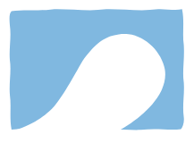
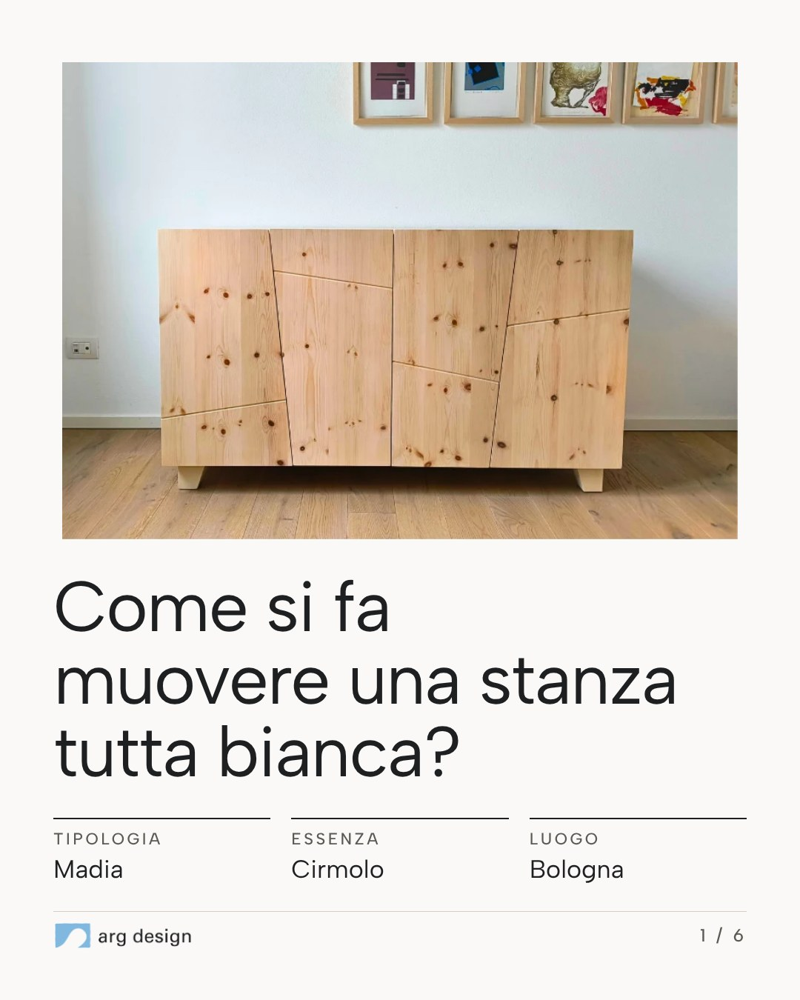
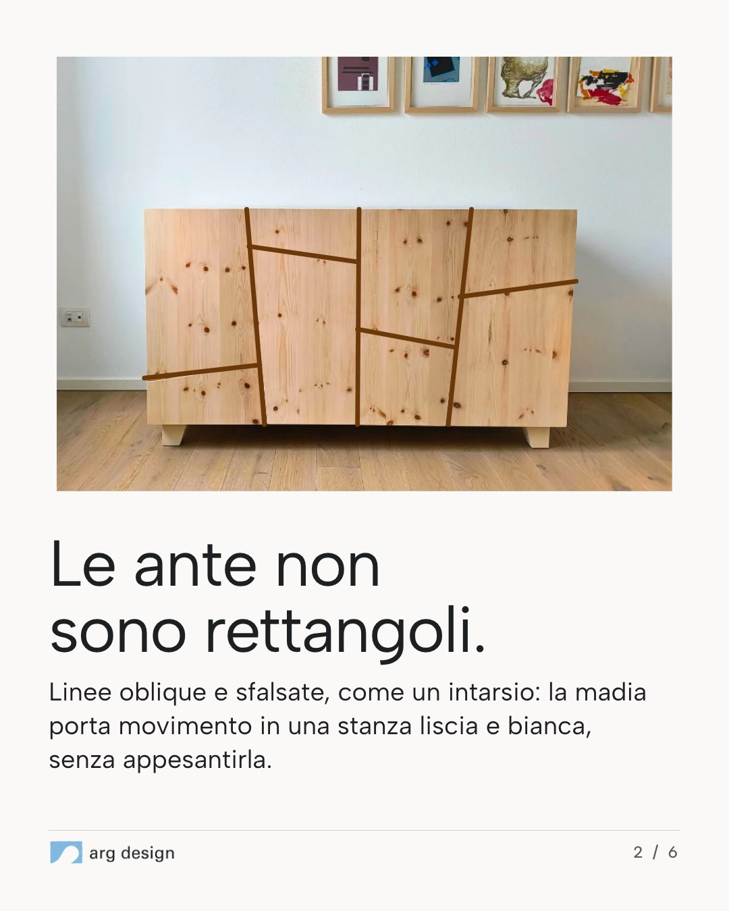
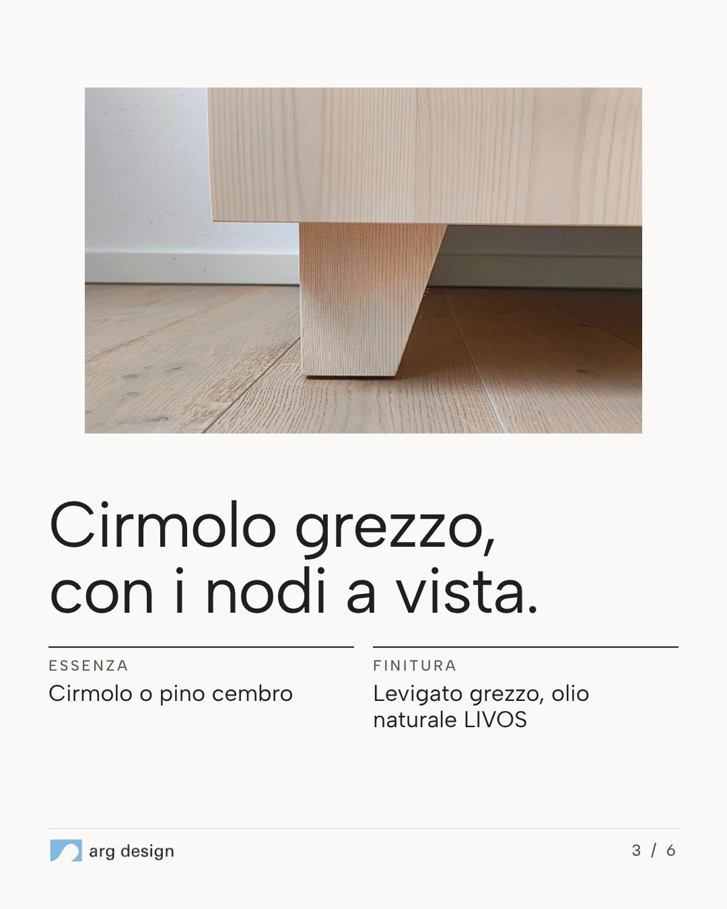
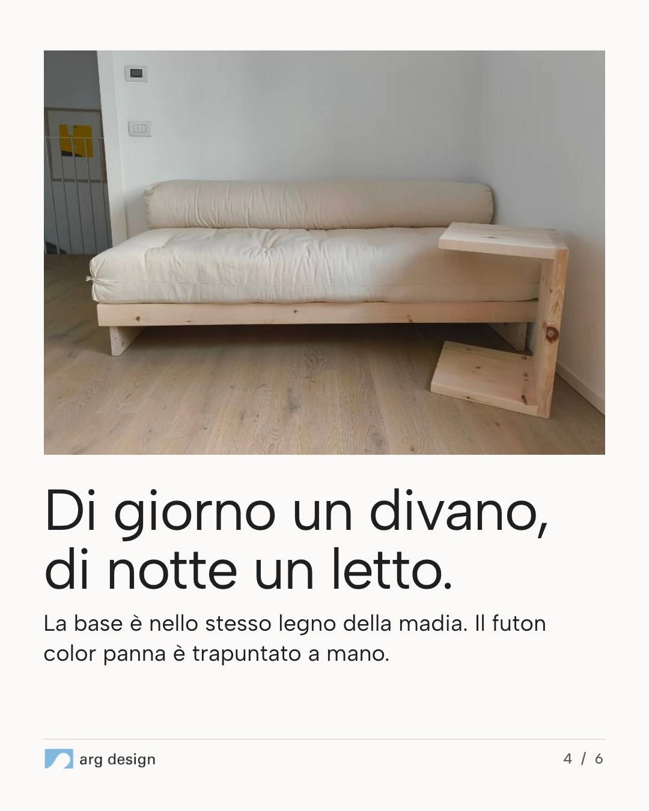
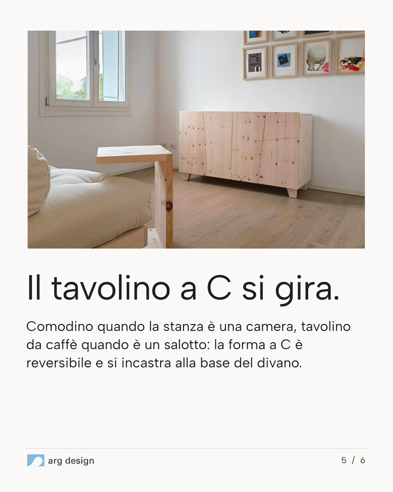
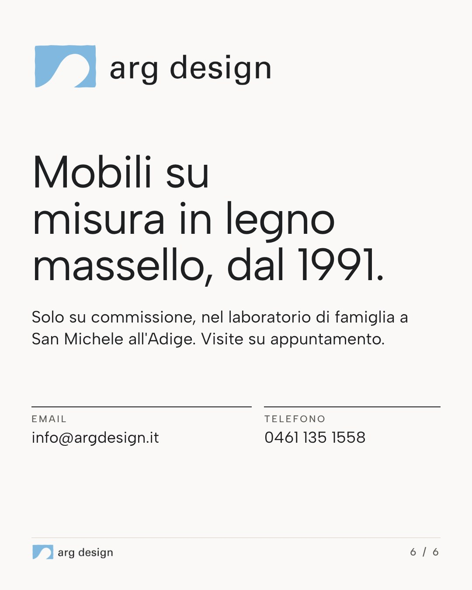

argdesign1 / 6





Scorri col dito o tocca le frecce
argdesign Come si fa muovere una stanza tutta bianca? Per una stanza ospiti a Bologna: una madia in cirmolo con le ante a linee oblique e sfalsate, come un intarsio. Accanto, un divano-letto con la base nello stesso legno e il futon trapuntato a mano, e un tavolino a C che fa da comodino o da tavolino da caffè. Mobili su misura in legno massello, dal 1991, nel nostro laboratorio a San Michele all'Adige. #cirmolo #mobilisumisura #legnomassello #trentino